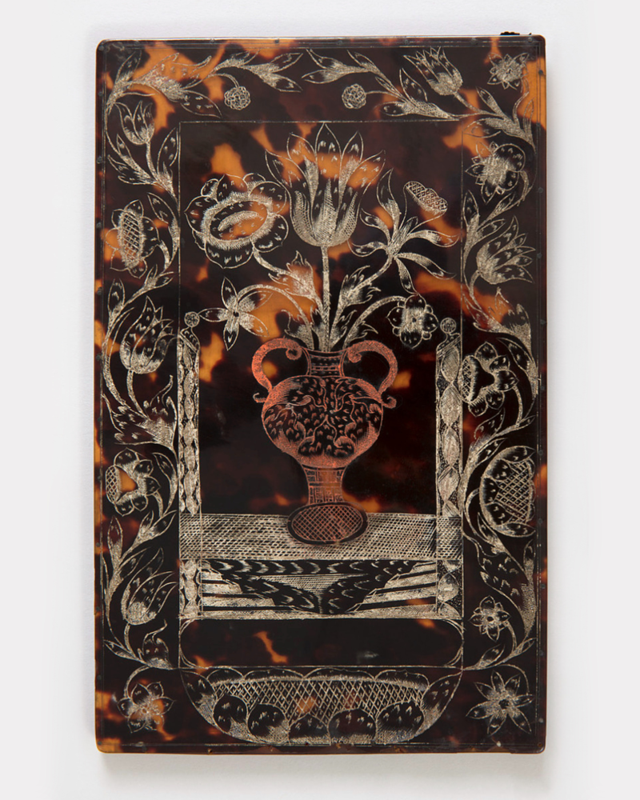
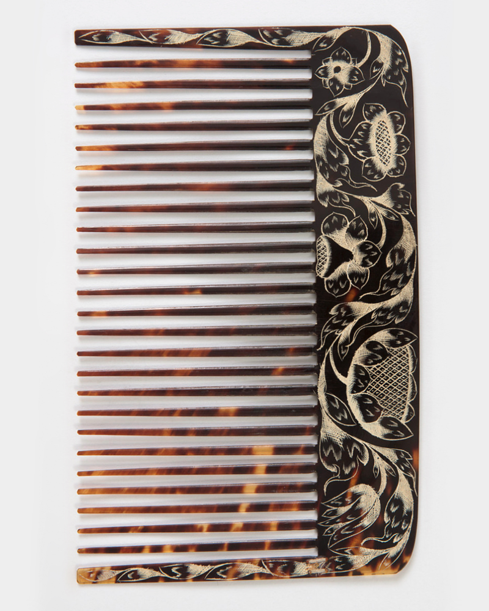
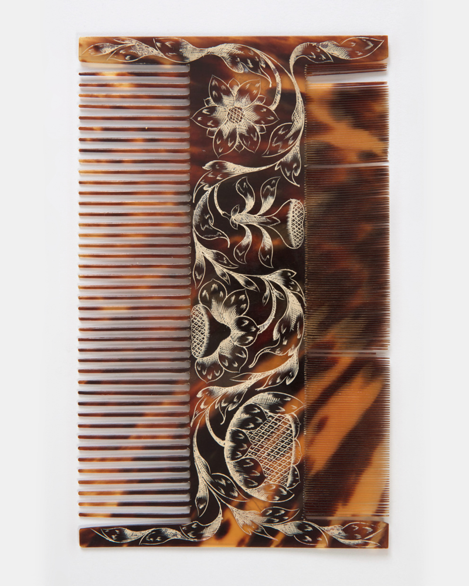
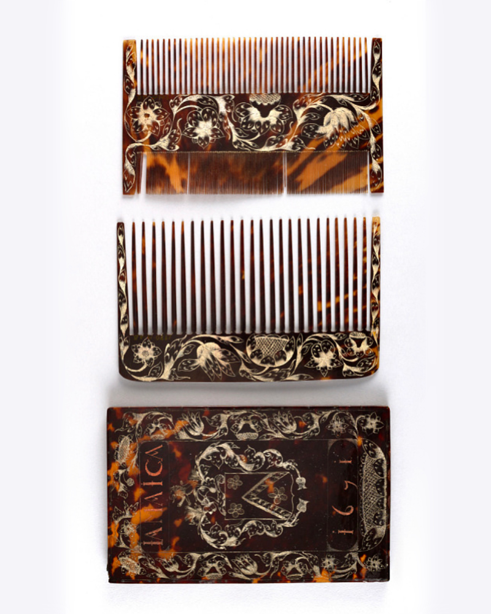

Comb Case with Wig and Lice Combs, Jamaica, 1671
The object is a rectangular comb case with engraved decoration consisting of floral borders framing a coat of arms, inscribed “IAMAICA” above and “1671” below.
The case contains multiple comb elements, including a large toothed comb and additional fine-toothed combs. It’s made of tortoiseshell and paint. Such objects were used for the maintenance of hair and wigs, as well as for the removal of lice, reflecting everyday grooming and hygiene practices of the period.
The object is part of the Product Design and Decorative Arts collection of the Cooper Hewitt, Smithsonian Design Museum and entered the museum’s collection in 1980 as a gift of Kit Robbins.
The recorded dimensions are: (a) 21.8 × 13.5 × 0.8 cm, (b) 20.1 × 12.5 × 0.4 cm, and (c) 12.1 × 20 × 0.1 cm.